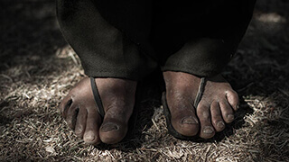

Tarahumara
Los Guardianes del Bosque


“No hay consulta, no hay participación y no hay consentimiento por parte de los pueblos indígenas en estos megaproyectos que enfrentan y que el estado mexicano da a empresas, a particulares, a transnacionales para la explotación de los recursos naturales”.
“Es la bella música la que danza por la montaña. Este bosque canta bien bonito, se oyen como violines. Nosotros bailamos con la música que el pino produce, el pino que nosotros estamos acabando, el pino que estamos matando para entregarlo a otros lugares. Es el pino que tenemos que cuidar pero lo estamos cortando. Si se acaban los pinos, ¿cómo vamos a vivir bien? El pino trae la lluvia, nos da la respiración y nos cura de las enfermedades. Tenemos que enseñarles a nuestros hijos a cuidar y a defender el bosque y el agua. Nosotros moriremos antes de los pinos, pero si cuidamos de los pinos nosotros también viviremos por más tiempo”.